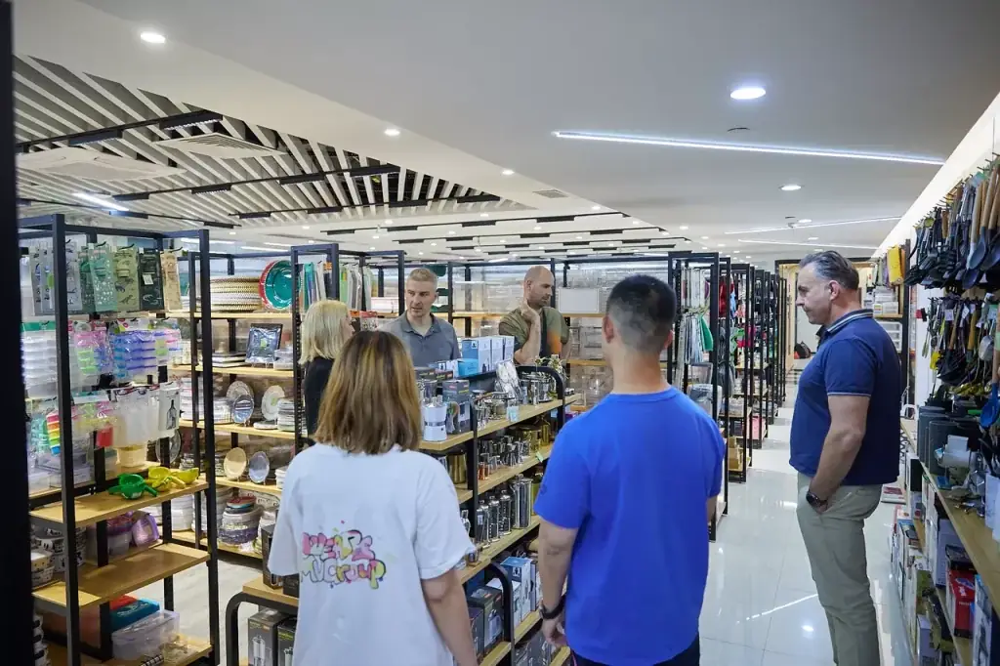

The short answer
A household goods sourcing agent in China can help an international B2B buyer turn a multi-SKU range into product and supplier research, comparable quotations, samples, order management, quality-check coordination, warehouse receiving, consolidation and export preparation when these activities are included in the agreed project scope.
Buyers make the commercial and product decisions. The sourcing process should make supplier differences, approved references and shipment data easier to review.
Define the range before requesting prices
“Daily household goods” may include kitchen tools, storage and organisation, cleaning accessories, laundry items, bathroom accessories, travel items, tableware, seasonal basics and general merchandise. That breadth can make a quote list unmanageable unless every SKU has a defined role.
- Product photo, link, drawing or approved reference;
- intended use, material, dimensions, colour and set contents;
- quantity by SKU, target retail channel and destination market;
- packaging, barcode, labeling, artwork and carton-mark needs;
- target price basis and the required delivery window;
- known testing, document or market-entry requirements.
Make multi-supplier quotations comparable
A low price can reflect a smaller set, lighter material, different finish, reduced packaging or a different quantity tier. Ask suppliers to quote against the same written specification and capture every deviation. The buyer should be able to see which quote meets the range requirement and which one is a substitute proposal.
Samples and packaging are part of the product decision
For household products, the product shown in a catalogue is not necessarily the retail-ready product. Confirm the approved version, material, dimensions, finish, function, logo/artwork, pack count, colour reference and retail packaging before commercial production. This makes later quality observations more useful because they can be compared to an agreed reference.
Use carton data to control a mixed order
Mixed orders are operationally different from buying a single SKU. Request carton count, carton dimensions, gross weight, SKU labels, supplier readiness dates and purchase-order references early. These details help with warehouse receiving, discrepancy reconciliation, consolidation and shipment handoff. They also help buyers avoid selecting items that look economical per unit but create an unsuitable carton or volume outcome.
Plan checks around product risk
Quality-check coordination should follow the buyer-approved criteria. Depending on the product, relevant points may include materials, dimensions, appearance, assembly, functional parts, labels, pack contents, carton protection and quantities. It is not a universal guarantee. If an item has destination-market requirements, the buyer should identify them early and obtain suitable professional advice.
How ROYAL UNION supports household-goods procurement
ROYAL UNION is an independent sourcing and supply-chain partner under MU Group. For an agreed B2B project, we can support product and supplier research, product development and packaging coordination, order management, quality-check coordination, warehouse receiving, multi-supplier consolidation and export preparation.
Product suitability, supplier availability, price, minimum order, documents, timing, logistics and service scope are confirmed project by project. We do not represent a marketplace or make unsupported compliance claims.
Send your household goods category list
Share the product references, quantity by SKU, destination, target price basis, packaging needs and timing. We will review the request and identify a practical next step.
Buyer questions
What household goods should be included in a sourcing brief?
Include product references, materials, dimensions, colour, pack count, quantity by SKU, packaging, destination, target price basis and known requirements.
Can household goods from different suppliers be consolidated?
Yes, when this is within the agreed scope and carton data, labels, receiving and loading priorities are planned early.
How can a buyer compare supplier quotations?
Use a single written specification, then record materials, set contents, carton data, price basis, minimum order and supplier exceptions separately.
Does ROYAL UNION guarantee product compliance?
No. Buyers should confirm market obligations with qualified advisers and include known requirements in the product brief.
This is original B2B buyer guidance from ROYAL UNION. It does not promise product availability, supplier terms, testing outcomes, market access, price, minimum order or delivery timing. Confirm the relevant commercial and destination-market requirements for each project.